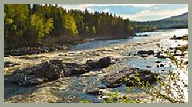
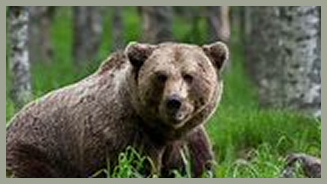
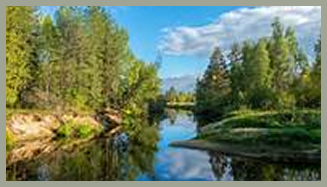
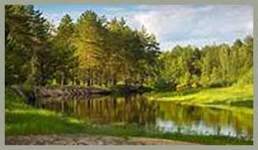

TAIGA

Vegetação
A taiga é uma floresta de coníferas que cobre grandes áreas do hemisfério norte, principalmente na Rússia, Canadá e Escandinávia. A vegetação é dominada por árvores resistentes ao frio, como pinheiros, abetos, e cedros. Além das coníferas, existem também alguns arbustos, musgos e líquens que crescem no solo ácido e pobre em nutrientes. Essa vegetação é adaptada para suportar invernos longos e rigorosos.

Fauna
A fauna da taiga é composta por animais adaptados ao clima frio e às longas estações de inverno. Entre os principais habitantes estão o alce, o lobo, o urso-pardo, a raposa, o linx e diversas espécies de aves como o mocho e o gavião. Muitos desses animais possuem pelagem espessa para se proteger do frio intenso e comportamentos que ajudam a conservar energia durante o inverno rigoroso.
.svg)
Clima
O clima da taiga é subártico, com invernos longos e muito frios, e verões curtos e amenos. As temperaturas no inverno podem chegar a -50 °C, enquanto no verão podem atingir até 20 °C. A precipitação é relativamente baixa, ocorrendo principalmente na forma de neve.

Importância Ecológica
A taiga é um dos maiores biomas do mundo e desempenha um papel vital na regulação do clima global, atuando como um grande sumidouro de carbono. As vastas florestas ajudam a purificar o ar e a manter o equilíbrio dos níveis de oxigênio. A preservação da taiga é fundamental para combater as mudanças climáticas e proteger a biodiversidade.
